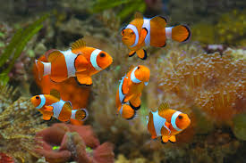

Ikan Badut

Tahukah kamu bahwa semua ikan badut terlahir sebagai jantan? Jika dalam kelompoknya betina dominan mati, pejantan terbesar akan berubah menjadi betina. Selain itu, ikan badut memiliki hubungan simbiosis mutualisme dengan anemon laut—mereka mendapatkan perlindungan dari tentakel beracun anemon, sementara ikan badut membantu membersihkan dan memberi makan anemon.